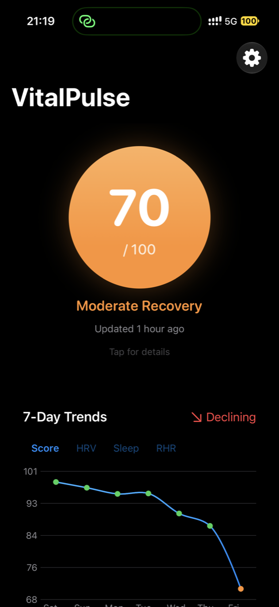

One number each morning. Built for one wrist. Not on the App Store.

Wake up. Look at your wrist or your phone. Know how recovered you are before the day starts.
The score is weighted from three signals your body already records:
| Heart rate variability | 50% |
| Sleep | 35% |
| Resting heart rate | 15% |
Most apps compare you to a population. VitalPulse computes your baseline from your own trailing 30 days of data. A score of 70 means you are recovered relative to you.
Bad samples get filtered before they can skew the baseline: unrealistic readings and statistical outliers are excluded. In the live test dataset, 23 of 332 HRV samples were filtered out.
On first run it backfills 30 days of historical scores, so the trend chart is full from day one.
| First commit | Oct 2025 |
|---|---|
| Commits | 90 |
| Shipped epics | 6 |
| Swift files | 142 |
| Lines of Swift | ~23,000 |
| Test functions | 407 |
| Test suites passing | 35 / 35 |
| Targets | iPhone, Apple Watch, watch widget |
| Runs on | iPhone 14 Pro, Apple Watch Ultra 2 |
| Server cost | €0 |
Swift, SwiftUI, SwiftData, HealthKit, WatchConnectivity, WidgetKit. Agents wrote most of the code. Data stays on the device: local store, HealthKit read-only, no network calls beyond the watch sync.
It never needed to be. It is a personal tool, signed with a free developer profile and installed on two devices at home. Health data stays in my pocket: no accounts, no analytics, no server.
The showcase here is the build, not a business. If you want to talk about either, say hello.